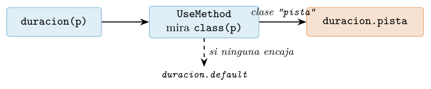
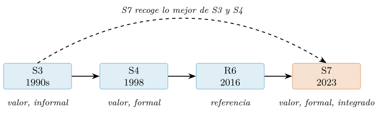
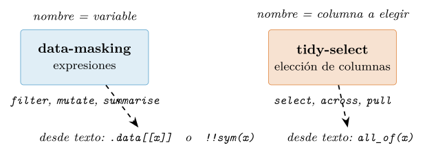
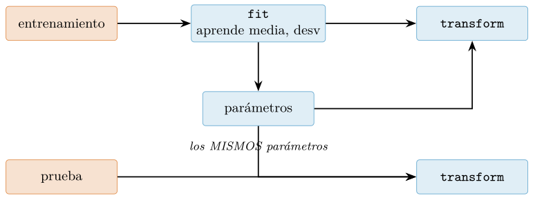

Capítulo 6. Sistemas de objetos, evaluación ordenada y patrones
▶ Ejecutar este capítulo en Binder
La primera vez que se abre, Binder construye el entorno en la nube (unos 10-20 min); verás una pantalla de progreso. Después queda en caché y abre en segundos. Si parece que no responde, espera a que termine de construirse o vuelve a intentarlo.
Hay una pregunta que desconcierta a quien llega a R desde otro lenguaje: ¿cómo se define una clase? La respuesta incómoda es que hay cuatro maneras, y que la más usada no se parece a ninguna clase que hayas visto. R no tiene un sistema de objetos, sino una historia de sistemas de objetos superpuestos, y esa aparente anarquía es en realidad una lección de diseño: cada sistema nació para resolver un problema concreto, y saber cuál elegir —o, más a menudo, reconocer cuál estás usando ya sin saberlo— es lo que separa el código que fluye con el lenguaje del que pelea contra él.
Este capítulo ordena ese paisaje. Primero, el reparto: los cuatro sistemas —S3, el ubicuo e informal; S4, el formal y verboso; R6, el mutable de referencia; y S7, el sucesor moderno que quiere unificarlos— con el criterio para elegir entre ellos. Después, el rasgo de R que ningún lenguaje orientado a objetos convencional tiene y sin el cual no se entiende su ecosistema de datos: la evaluación ordenada, la cuasicitación y la interfaz de fórmula, la maquinaria que hace posible que filter(pistas, energia > 0.6) funcione sin comillas alrededor de energia. Y por último, los patrones de diseño que de verdad se repiten en el código de datos —transformador, estrategia, pipeline, fábrica— con la advertencia que los enmarca a todos: en un lenguaje funcional, la clase es una herramienta entre varias, y muchas veces la peor. Como siempre, cada salida se ha ejecutado antes de imprimirla.
Cuatro sistemas de objetos, un mapa
Conviene empezar por el final: el mapa de la tabla 6.1, para tener la brújula antes de entrar en el bosque. Los cuatro sistemas se reparten en dos ejes. El primero es la semántica: S3, S4 y S7 son de valor —copiar el objeto copia sus datos, la regla del capítulo 2—, mientras que R6 es de referencia —copiar la etiqueta no copia el objeto—. El segundo es el formalismo: S3 es un acuerdo entre caballeros que nadie obliga a cumplir; S4, S7 y R6 imponen estructura, tipos y validación. De esos dos ejes salen las cuatro respuestas, y casi todo el arte está en no llevar a un sistema el problema del otro.
| Sistema | Semántica | Formal | Nicho |
|---|---|---|---|
| S3 | valor | no | el 90 % de R; métodos sobre clases informales |
| S4 | valor | sí | Bioconductor, despacho múltiple, rigor |
| R6 | referencia | sí | estado mutable: conexiones, contadores, colas |
| S7 | valor | sí | clases nuevas con validador; el futuro |
Antes de verlos uno a uno, un aviso que ahorra confusión: no hay que elegir sistema en abstracto, como quien escoge religión. Se elige por tarea. Extender el comportamiento de un objeto que ya existe —que se imprima distinto, que summary diga algo útil— es casi siempre S3, porque así está construido todo R. Crear un tipo nuevo con campos garantizados y validación —una configuración, un modelo, un contrato de datos— es hoy trabajo de S7. Y solo cuando el objeto es un estado que cambia en el tiempo —un contador, una conexión, una barra de progreso— entra R6. S4 se estudia sobre todo para leerlo, porque medio Bioconductor está escrito en él.
S3: el sistema que ya usas sin saberlo
Empecemos por una revelación. Cuando en el capítulo 3 ajustamos un modelo y lo imprimimos, ya estábamos usando programación orientada a objetos:
m <- lm(mpg ~ wt, data = mtcars)
class(m) # una clase
#> [1] "lm"
is.list(m) # ...que por debajo es una simple lista
#> [1] TRUEUn modelo lm es una lista corriente (cap. 2) con una etiqueta pegada: el atributo class. Y cuando escribes print(m) o summary(m), R mira esa etiqueta y elige la función adecuada. Eso es todo S3: un sistema construido sobre dos ideas mínimas —un objeto es un dato con un atributo class, y un método es una función cuyo nombre lleva la clase detrás de un punto—. No hay declaración de clase, ni comprobación, ni ceremonia. Se fabrica un objeto pegándole la etiqueta:
pista <- function(titulo, genero, energia) {
structure(list(titulo = titulo, genero = genero, energia = energia),
class = "pista") # la etiqueta que lo hace una "pista"
}
p <- pista("Nube", "pop", 0.74)
class(p)
#> [1] "pista"Y se le da comportamiento definiendo funciones con el sufijo de la clase. El mecanismo que las conecta es el genérico: una función que no hace el trabajo, sino que mira la clase de su argumento y delega en el método correspondiente. print es un genérico; para que nuestra pista se imprima a su manera, basta escribir print.pista:
print.pista <- function(x, ...) {
cat("<pista>", x$titulo, "(", x$genero, ")\n")
}
p # la autoimpresion ya despacha
#> <pista> Nube ( pop )Para escribir un genérico propio se usa UseMethod, que es literalmente «mira la clase del primer argumento y salta al método»:
duracion <- function(x, ...) UseMethod("duracion")
duracion.pista <- function(x, ...) "3:52"
duracion.default <- function(x, ...) stop("no sé cómo durar esto")
duracion(p)
#> [1] "3:52"
duracion(42) # cae en el metodo .default
#> Error: no sé cómo durar esto
UseMethod lee la clase del primer argumento y salta al método cuyo nombre lleva esa clase tras el punto. Si el vector de clases no casa con ningún método, cae en .default. Todo el sistema es esta búsqueda de un nombre.El método .default es la red de seguridad: el método que se usa cuando ninguna clase encaja. Este es todo el aparato de S3, y su ubicuidad no es una exageración retórica: en una sesión limpia de R, el genérico print tiene ya 194 métodos registrados, y format, 73. Cada objeto que R imprime bonito —un factor, una fecha, una tabla, un modelo— lo hace por este mismo mecanismo.
La informalidad tiene precio: nadie valida
La ligereza de S3 es su virtud y su talón de Aquiles. Como una clase es solo una etiqueta de texto, cualquiera puede pegarla sobre cualquier cosa, y S3 se lo cree:
falsa <- list(titulo = "X") # sin genero, sin energia
class(falsa) <- "pista" # y sin embargo, "es" una pista
print.pista(falsa) # el metodo la trata como tal...
#> <pista> X ( ) <- ...y falla en silencio, sin generoS3 no comprueba que un objeto de clase "pista" tenga los campos que un método espera. Esa confianza es cómoda para prototipar y peligrosa para producir. La disciplina que la comunidad de R ha decantado (Wickham 2019) para domesticarla son tres funciones separadas: un constructor de bajo nivel, rápido y sin comprobaciones (new_pista); un validador que verifica las invariantes (validate_pista); y un ayudante amable para el usuario que combina ambos. El patrón, sobre un tipo «temperatura» que no puede bajar del cero absoluto:
new_temp <- function(x = double()) {
stopifnot(is.double(x)) # contrato minimo, barato
structure(x, class = "temperatura")
}
validate_temp <- function(x) {
if (any(unclass(x) < -273.15, na.rm = TRUE))
stop("por debajo del cero absoluto")
x
}
temperatura <- function(x) validate_temp(new_temp(as.double(x))) # el ayudante
temperatura(-300)
#> Error: por debajo del cero absolutoNótese unclass(x) dentro del validador: para comparar los números sin disparar de nuevo el despacho de métodos, se le quita temporalmente la clase. Es un idioma que reaparece cada vez que un método necesita tratar su objeto como el dato desnudo que hay debajo.
Herencia S3: un vector de clases
La herencia en S3 es tan sencilla como el resto: el atributo class puede ser un vector, y R lo recorre de izquierda a derecha buscando un método. El primero que encuentra, gana.
album <- function(titulo, pistas) {
structure(list(titulo = titulo, pistas = pistas),
class = c("recopilatorio", "album")) # recopilatorio Y album
}
print.album <- function(x, ...) {
cat("<album>", x$titulo, "-", length(x$pistas), "pistas\n")
}
a <- album("Grandes éxitos", list(p, p))
a # no hay print.recopilatorio -> hereda print.album
#> <album> Grandes éxitos - 2 pistasComo no existe print.recopilatorio, R sigue por el vector de clases y encuentra print.album. La subclase hereda el comportamiento de la superclase con solo nombrarla primero. Y cuando la subclase quiere extender un método sin reescribirlo entero, existe NextMethod, que llama al método de la siguiente clase del vector:
summary.album <- function(object, ...) cat("resumen de", object$titulo, "\n")
summary.recopilatorio <- function(object, ...) {
cat("[recopilatorio] ")
NextMethod() # y ahora que siga summary.album
}
summary(a)
#> [recopilatorio] resumen de Grandes éxitosEste encadenamiento —hacer algo propio y después delegar en la superclase— es el mismo ‘super’ que veremos en R6 y S7, aquí en versión mínima. Con esto S3 está completo: constructor, genérico, método, .default, herencia por vector y NextMethod. Cinco piezas para el sistema sobre el que descansa el 90 % de R.
Genéricos de grupo: dar sentido a + y [
Hay una clase de método que multiplica lo que S3 puede hacer con poco esfuerzo: los genéricos de grupo. En lugar de escribir un método por cada operador, R permite capturar familias enteras de una vez. El grupo Ops cubre la aritmética y las comparaciones (+, -, *, ==, <…); el grupo Math, las funciones matemáticas (abs, sqrt, log…). Un tipo «dinero» que guarda céntimos como entero para no arrastrar errores de coma flotante (cap. 2) los aprovecha:
dinero <- function(centimos) structure(as.integer(centimos), class = "dinero")
print.dinero <- function(x, ...) cat(sprintf("%.2f EUR\n", unclass(x) / 100))
Ops.dinero <- function(e1, e2) {
v <- get(.Generic)(unclass(e1), unclass(e2)) # .Generic: que operador llego
if (.Generic %in% c("+", "-", "*")) dinero(v) else v # aritmetica -> dinero
}
dinero(1250) + dinero(350)
#> 16.00 EUR
dinero(1250) > dinero(350)
#> [1] TRUELa variable especial .Generic contiene, dentro del método, el nombre del operador concreto que se invocó, de modo que un solo Ops.dinero atiende la aritmética y las comparaciones y decide en cada caso qué devolver: la suma de dos importes es dinero, pero su comparación es un lógico. Con la misma economía, un método para el corchete convierte a la clase en una colección con la que se puede rebanar, y un método length la hace medible:
playlist <- function(...) structure(list(...), class = "playlist")
`[.playlist` <- function(x, i) structure(unclass(x)[i], class = "playlist")
length.playlist <- function(x) length(unclass(x))
length(playlist("a", "b", "c", "d")[2:3])
#> [1] 2 <- rebanar una playlist da otra playlistEsta es la razón profunda de que en R tantos objetos —fechas, factores, unidades, importes— «se comporten como números» sin serlo: definen los métodos de grupo adecuados y el resto del lenguaje los trata con naturalidad. Es sobrecarga de operadores, sí, pero conseguida con el mismo mecanismo humilde del resto de S3: una función con un nombre convenido.
Un objeto que sigue el protocolo de R
Reunamos las piezas de S3 en algo con la forma de los objetos que R trae de serie. Cuando ajustas un lm, obtienes un objeto que se imprime con print, se resume con summary, revela sus parámetros con coef y predice con predict. Ese repertorio de genéricos es un protocolo tácito: cualquiera que lo respete produce objetos que encajan en el resto de R. Construyamos un modelo mínimo —la media de una variable por grupo— que lo cumpla entero:
modelo_medias <- function(formula, datos) { # el "fit"
y <- all.vars(formula)[1]; g <- all.vars(formula)[2]
structure(list(medias = tapply(datos[[y]], datos[[g]], mean),
y = y, g = g, n = nrow(datos)),
class = "modelo_medias")
}
print.modelo_medias <- function(x, ...) {
cat("Modelo de medias:", x$y, "~", x$g, "(n =", x$n, ")\n"); invisible(x)
}
coef.modelo_medias <- function(object, ...) object$medias
predict.modelo_medias <- function(object, newdata, ...)
unname(object$medias[as.character(newdata[[object$g]])])Cuatro métodos sobre cuatro genéricos que R ya tiene, y el objeto se comporta como uno de la casa:
catalogo <- data.frame(
genero = c("pop", "rock", "pop", "jazz", "rock", "pop"),
popularidad = c(80, 55, 91, 40, 62, 73),
energia = c(0.73, 0.62, 0.81, 0.40, 0.58, 0.69))
m <- modelo_medias(energia ~ genero, catalogo)
m # print.modelo_medias
#> Modelo de medias: energia ~ genero (n = 6)
predict(m, data.frame(genero = c("pop", "jazz"))) # predict.modelo_medias
#> [1] 0.743 0.400Ni predict ni coef son funciones nuestras: son genéricos de R base a los que nos hemos enganchado definiendo el método con el sufijo de nuestra clase. Ese es el rendimiento del despacho S3: escribir un objeto que habla el idioma común del ecosistema —que cualquier usuario de R sabe usar sin leer documentación, porque predict es predict en todas partes—. La fórmula energia ~ genero que recibe el constructor es, de nuevo, evaluación ordenada: la desmenuzamos con all.vars sin evaluarla, como hará la sección §6.6.4. Extender el ecosistema, no reinventarlo, es la esencia de S3 y la razón de su ubicuidad.
S4: rigor formal y despacho múltiple
Cuando la informalidad de S3 no basta —cuando un tipo debe garantizar sus campos, o cuando el método depende de más de un argumento— aparece S4, el sistema formal que R tomó prestado del mundo de los lenguajes orientados a objetos clásicos. Todo en S4 es explícito y declarado. Una clase se define con setClass, sus campos se llaman slots y llevan tipo, y su integridad se protege con una función de validity que corre en cada construcción:
setClass("Pista4",
representation(titulo = "character", energia = "numeric"),
validity = function(object) {
if (object@energia < 0 || object@energia > 1) "energía fuera de [0, 1]"
else TRUE
})
p4 <- new("Pista4", titulo = "Nube", energia = 0.74)
p4@titulo # los slots se acceden con @
#> [1] "Nube"
new("Pista4", titulo = "X", energia = 9)
#> Error: invalid class "Pista4" object: energía fuera de [0, 1]El operador @ es a los slots de S4 lo que $ a los elementos de una lista, con una diferencia crucial: un slot inexistente o de tipo equivocado es un error, no un NULL silencioso. Esa rigidez es justamente lo que se busca. Pero la característica que de verdad distingue a S4, y que ningún otro sistema de R iguala, es el despacho múltiple: el método puede elegirse en función de las clases de varios argumentos a la vez.
setGeneric("mezclar", function(a, b) standardGeneric("mezclar"))
setClass("Voz", representation(nombre = "character"))
setClass("Beat", representation(bpm = "numeric"))
setMethod("mezclar", signature("Voz", "Beat"), function(a, b)
cat("voz", a@nombre, "sobre", b@bpm, "bpm\n"))
mezclar(new("Voz", nombre = "Ana"), new("Beat", bpm = 120))
#> voz Ana sobre 120 bpmEn S3, print despacha solo sobre su primer argumento; en S4, mezclar elige el método según la combinación de tipos de a y b, y podría haber un método distinto para signature("Beat", "Voz"). Es el patrón que motiva a S4 en dominios como el álgebra —donde matriz * escalar y escalar * matriz son operaciones distintas— o la bioinformática. La herencia usa contains y el equivalente de NextMethod es callNextMethod:
setClass("PistaViva", contains = "Pista4", # hereda los slots de Pista4
representation(sala = "character"))
setGeneric("describir", function(x) standardGeneric("describir"))
setMethod("describir", "Pista4", function(x) cat("pista:", x@titulo, "\n"))
setMethod("describir", "PistaViva", function(x) {
callNextMethod() # primero lo del padre
cat(" en directo desde", x@sala, "\n")
})
describir(new("PistaViva", titulo = "Nube", energia = 0.6, sala = "Apolo"))
#> pista: Nube
#> en directo desde ApoloEl precio de S4 es la verbosidad —cada clase, cada genérico y cada método es una llamada explícita— y una sintaxis que muchos encuentran pesada. Por eso, en 2026, para código nuevo la recomendación se ha desplazado: lo que antes pedía S4 hoy lo hace S7 con menos ceremonia y mejor integración. S4 se aprende, sobre todo, para leer las miles de clases que Bioconductor y otros paquetes maduros ya han escrito con él. El detector rápido de qué mundo habita un objeto es isS4:
isS4(p4) # TRUE
isS4(m) # FALSE: el modelo lm era S3Tres piezas más completan el retrato de S4, por si te toca leerlo. La validez puede añadirse después de definir la clase con setValidity, útil cuando la restricción llega más tarde. La impresión se personaliza con un método para el genérico show —el print del mundo S4—. Y las uniones de clases, con setClassUnion, crean un tipo virtual que abarca varios, de modo que un slot pueda aceptar, por ejemplo, un número o un texto:
setClassUnion("NumeroOTexto", c("numeric", "character"))
setClass("Etiqueta", representation(v = "NumeroOTexto"))
new("Etiqueta", v = 5)@v # 5
new("Etiqueta", v = "alto")@v # "alto": ambos validosEstas construcciones —validez diferida, show, uniones— son omnipresentes en el código S4 de los paquetes maduros, y reconocerlas basta para leerlo con soltura aunque nunca escribas una clase S4 propia.
R6: cuando el objeto es un estado que cambia
Los tres sistemas anteriores comparten la semántica de valor de R: un objeto es un dato, y modificarlo produce una copia (cap. 2). Eso es lo correcto casi siempre —«una función no puede estropear tus datos»—, pero hay una familia de objetos para los que es un estorbo: aquellos cuya esencia es cambiar. Un contador que se incrementa, una conexión que se abre y se cierra, una barra de progreso, una caché que crece: modelarlos como valores inmutables obliga a ir devolviendo copias nuevas en cada paso, y el código se vuelve un pasamanos incómodo. Para ellos existe R6 (Chang 2025), el sistema de semántica de referencia.
library(R6)
Contador <- R6Class("Contador",
public = list(
total = 0,
initialize = function(inicio = 0) self$total <- inicio,
suma = function(x = 1) { self$total <- self$total + x; invisible(self) },
valor = function() self$total
))
c1 <- Contador$new()
c1$suma(3)$suma(4) # encadenable: suma() da invisible(self)
c1$valor()
#> [1] 7Dos rasgos saltan a la vista y ambos son deliberados. El primero es self: dentro de los métodos, el objeto se refiere a sí mismo por ese nombre, y self$total <- ... modifica el objeto en su sitio, sin copiarlo. El segundo es el encadenamiento con $, más cercano a los lenguajes clásicos de objetos que al resto de R. Pero la consecuencia que hay que interiorizar —porque es fuente de errores para quien viene del R de valor— es que R6 no copia al asignar:
c2 <- c1 # NO es una copia: es otra etiqueta al MISMO objeto
c2$suma(100)
c1$valor() # tocar c2 cambio c1
#> [1] 107
c3 <- c1$clone() # la copia hay que pedirla explicitamente
c3$suma(1000)
c1$valor() # c1 intacto: c3 era de verdad otro objeto
#> [1] 107Donde un vector o una lista se copian al modificarse, un objeto R6 se comparte. Es la misma semántica de los environments del capítulo 2 —de hecho, R6 está construido sobre ellos— y exige el mismo cuidado: si dos partes del programa tienen el mismo objeto R6, se ven los cambios mutuamente, y el clone() es la única forma de romper el vínculo.
A cambio de ese cuidado, R6 ofrece la encapsulación más genuina de todo R. Puede declarar miembros privados, invisibles desde fuera, y campos activos que parecen datos pero ejecutan código al leerse o escribirse:
Cuenta <- R6Class("Cuenta",
public = list(
initialize = function(saldo = 0) private$.saldo <- saldo,
ingresar = function(x) {
private$.saldo <- private$.saldo + x; invisible(self) }
),
private = list(.saldo = 0), # invisible desde fuera
active = list(
saldo = function(value) { # parece un campo, es una funcion
if (missing(value)) private$.saldo # al leer: devuelve
else stop("el saldo no se asigna; usa ingresar()") # al escribir: veta
}
))
cta <- Cuenta$new(100); cta$ingresar(50)
cta$saldo # se lee como un campo
#> [1] 150
cta$saldo <- 999 # pero la escritura esta controlada
#> Error: el saldo no se asigna; usa ingresar()El campo privado .saldo no existe para el mundo exterior —cta$.saldo es NULL—, y el saldo solo cambia por la puerta prevista, ingresar. Esto es encapsulación real, no una convención de nombres: el invariante «el saldo solo se modifica de formas válidas» queda protegido por el lenguaje. La herencia usa inherit y da acceso al padre por super$:
CuentaRemunerada <- R6Class("CuentaRemunerada", inherit = Cuenta,
public = list(
tipo = 0.02,
intereses = function() {
super$ingresar(private$.saldo * self$tipo) # reutiliza el padre
invisible(self)
}
))
CuentaRemunerada$new(1000)$intereses()$saldo
#> [1] 1020Dos comodidades más del generador R6 conviene conocer. Un método llamado print en la lista pública personaliza cómo se muestra el objeto —el equivalente R6 de un método S3 de impresión—. Y el clone tiene una sutileza cuando el objeto contiene otros objetos R6: por defecto es superficial (copia el objeto pero comparte los objetos anidados), y para copiar en profundidad hay que pedir clone(deep = TRUE):
Nodo <- R6Class("Nodo", public = list(
valor = NULL, hijo = NULL,
initialize = function(v) self$valor <- v,
print = function(...) { cat("<Nodo>", self$valor, "\n"); invisible(self) }))
n <- Nodo$new(1); n$hijo <- Nodo$new(2)
superficial <- n$clone() # comparte el hijo con n
superficial$hijo$valor <- 99
n$hijo$valor # ...y el cambio se ve en n
#> [1] 99
profundo <- n$clone(deep = TRUE) # copia tambien el hijo
profundo$hijo$valor <- 7
n$hijo$valor # n intacto: el hijo era independiente
#> [1] 99Es la misma distinción superficial/profundo de cualquier lenguaje con referencias, y la fuente de una clase entera de errores sutiles: creer que se ha copiado un objeto R6 cuando solo se ha copiado su cáscara. Con objetos R6 que anidan objetos R6, deep = TRUE suele ser lo que de verdad se quiere.
La regla de oro con R6: úsalo cuando la identidad del objeto importa más que su valor —cuando «este contador» y «una copia con el mismo total» son cosas distintas—. Si lo que tienes es un dato que se transforma, y no un estado que persiste, la semántica de valor de S3/S7 es más segura y más idiomática. R6 resuelve un problema real, pero es el sistema que más fácil se usa de más.
El caso que justifica R6: un acumulador en línea
Para ver cuándo R6 gana de verdad, un ejemplo donde la mutación no es un lujo sino la esencia: calcular media y varianza de un flujo de datos que no cabe en memoria (cap. 5), viendo cada valor una sola vez. El algoritmo de Welford mantiene tres números que se actualizan con cada llegada, y un objeto R6 es su hogar natural —el estado es el objeto—:
EstadoRodante <- R6Class("EstadoRodante",
public = list(
n = 0, media = 0, m2 = 0,
add = function(x) { # incorpora un valor y actualiza
self$n <- self$n + 1
d <- x - self$media
self$media <- self$media + d / self$n
self$m2 <- self$m2 + d * (x - self$media)
invisible(self)
},
var = function() if (self$n < 2) NA else self$m2 / (self$n - 1)
))
set.seed(2026)
flujo <- rnorm(10000, 50, 10) # 10 000 valores sinteticos
acc <- EstadoRodante$new()
for (x in flujo) acc$add(x) # un pase, memoria constante
c(acc$media, acc$var())
#> [1] 50.037 100.29 <- identicos a mean() y var() del flujo enteroModelar esto con semántica de valor sería antinatural: cada add tendría que devolver un objeto nuevo y el bucle iría reasignándolo, un pasamanos sin sentido cuando lo que existe conceptualmente es un acumulador que evoluciona. Aquí la identidad importa —«este acumulador», con su historia— y esa es la señal inequívoca de que R6 es la herramienta correcta. El contraste con la tipificación del transformador (§6.7.1), donde ajustar devuelve un objeto nuevo, no es contradicción: allí el ajuste es un valor inmutable que se guarda; aquí el acumulador es un proceso que transcurre.
S7: el futuro que unifica
Los tres sistemas anteriores son historia acumulada: S3 desde los orígenes, S4 de los noventa, R6 de la era de los paquetes. Cada uno resuelve su problema, pero la convivencia es incómoda —sintaxis distintas, reglas de herencia distintas, integración desigual—. S7 (Vaughan et al. 2025) es la respuesta madura de la comunidad de R a ese desorden: un sistema nuevo, en CRAN desde 2023 y con la vocación declarada de entrar algún día en R base, que toma lo mejor de S3 y S4 —semántica de valor, despacho de métodos, validación formal— con una sintaxis limpia y, sobre todo, integrándose con lo que ya existe en lugar de competir. Una clase S7 se define con new_class y propiedades tipadas:
library(S7)
Pista <- new_class("Pista",
properties = list(
titulo = class_character,
energia = new_property(class_numeric, default = 0.5),
popularidad = class_integer
),
validator = function(self) {
if (self@energia < 0 || self@energia > 1) "energía debe estar en [0, 1]"
else if (length(self@popularidad) &&
(self@popularidad < 0 || self@popularidad > 100))
"popularidad debe estar en [0, 100]"
})
p <- Pista(titulo = "Nube", energia = 0.74, popularidad = 74L)
p@energia
#> [1] 0.74De un vistazo se reconoce lo bueno de cada predecesor: las propiedades llevan tipo —como los slots de S4— y se acceden con @, hay un validator —como la validity de S4—, y admiten valores por defecto. Pero S7 añade dos garantías que ninguno tenía tan pulidas. La primera: los tipos se comprueban en la frontera, al construir, con mensajes claros:
Pista(titulo = "X", energia = "alta")
#> Error: <Pista> object properties are invalid:
#> - @energia must be <integer> or <double>, not <character>
Pista(titulo = 42, energia = 0.5)
#> Error: <Pista> object properties are invalid:
#> - @titulo must be <character>, not <double>La segunda, y es la que lo hace idóneo para datos: el validador corre también al modificar, no solo al crear. Un objeto S7 no puede llegar a un estado inválido en ningún momento de su vida:
p@energia <- 2 # intento de dejarlo invalido
#> Error: <Pista> object is invalid:
#> - energía debe estar en [0, 1]
p@energia <- 0.3 # valido: pasa sin ruidoEsta propiedad —invariantes que se mantienen durante toda la vida del objeto, no solo en el nacimiento— es exactamente lo que un contrato de datos necesita, y es la razón de que S7 sea el andamio natural de los contratos de datos con validación continua. En el capítulo 10, cuando formalicemos la calidad de datos, este validador será el andamio.
Genéricos, herencia y convivencia
Los métodos de S7 se declaran con new_generic y method, con una sintaxis que a estas alturas resulta familiar:
describir <- new_generic("describir", "x")
method(describir, Pista) <- function(x) {
cat("Pista:", x@titulo, "| energía", x@energia, "\n")
}
describir(p)
#> Pista: Nube | energía 0.3La herencia usa parent, y la llamada al método del padre es super(objeto, to = Clase) —el eco directo de NextMethod y callNextMethod—:
PistaViva <- new_class("PistaViva", parent = Pista,
properties = list(sala = class_character))
method(describir, PistaViva) <- function(x) {
describir(super(x, to = Pista)) # primero el metodo del padre
cat(" en directo desde", x@sala, "\n")
}
describir(PistaViva(titulo = "Nube", energia = 0.6, sala = "Apolo"))
#> Pista: Nube | energía 0.6
#> en directo desde ApoloY aquí está la jugada maestra, la que justifica que exista un cuarto sistema en lugar de un tercero: S7 convive con S3 y S4. Se puede registrar un método S7 sobre un genérico S3 clásico como print, y el despacho de siempre lo encuentra:
method(print, Pista) <- function(x, ...) cat("<Pista>", x@titulo, "\n")
print(p) # el print de S3 despacha al metodo S7
#> <Pista> NubeEsta interoperabilidad es la diferencia entre S7 y un enésimo sistema aislado: no pide reescribir el ecosistema, se enchufa a él. Una clase S7 es a la vez un ciudadano de pleno derecho del mundo S3 —su print, su format, su summary funcionan— y un objeto con tipos y validación modernos. Por eso la recomendación de este libro para clases nuevas es, sin ambigüedad, S7; S3 queda para extender lo existente, y R6 para el estado mutable.
Una comodidad más que merece mención: las propiedades calculadas. Una propiedad con getter se comporta como un campo pero se calcula al vuelo, y es de solo lectura:
Circulo <- new_class("Circulo", properties = list(
radio = class_numeric,
area = new_property(class_numeric,
getter = function(self) pi * self@radio^2)))
Circulo(radio = 2)@area
#> [1] 12.566El area no se almacena —no puede quedar desincronizado con el radio—, se deriva. Es el equivalente S7 del @property de otros lenguajes, y una defensa natural contra el estado redundante.
Coerción y operadores: convert y grupos
Dos comodidades más redondean S7 y muestran su ambición de sistema completo. La primera es la coerción explícita entre clases con el genérico convert, que despacha —a la manera de S4— sobre el par (origen, destino):
Celsius <- new_class("Celsius", properties = list(t = class_numeric))
Fahrenheit <- new_class("Fahrenheit", properties = list(t = class_numeric))
method(convert, list(from = Celsius, to = Fahrenheit)) <-
function(from, to, ...)
Fahrenheit(t = from@t * 9/5 + 32)
convert(Celsius(t = 100), to = Fahrenheit)@t
#> [1] 212La conversión queda declarada como un método, no escondida en una función suelta: cualquiera que tenga un Celsius sabe que puede pedir un Fahrenheit, y la regla vive en un único sitio. La segunda comodidad es la sobrecarga de operadores, que en S7 es registrar un método sobre el propio + —el mismo genérico de siempre— con despacho por las clases de ambos operandos:
Vec2 <- new_class("Vec2",
properties = list(x = class_numeric, y = class_numeric))
method(`+`, list(Vec2, Vec2)) <- function(e1, e2)
Vec2(x = e1@x + e2@x, y = e1@y + e2@y)
v <- Vec2(x = 1, y = 2) + Vec2(x = 3, y = 4)
c(v@x, v@y)
#> [1] 4 6Donde S3 usaba el grupo Ops y .Generic (§6.2.3), S7 registra directamente sobre el operador con despacho múltiple limpio: la misma capacidad, expresada con la coherencia del sistema nuevo.
Dos refinamientos de las propiedades cierran el catálogo de S7. Cada propiedad puede llevar su propio validador y su propio setter, de modo que la restricción y la normalización vivan junto al campo que gobiernan:
TemperaturaC <- new_class("TemperaturaC", properties = list(
celsius = new_property(class_numeric,
validator = function(value) if (value < -273.15) "bajo el cero absoluto",
setter = function(self, value) { self@celsius <- round(value, 2); self })))
TemperaturaC(celsius = 20.456)@celsius # el setter redondea al asignar
#> [1] 20.46
TemperaturaC(celsius = -300) # el validador de la propiedad veta
#> Error: <TemperaturaC>@celsius bajo el cero absolutoY una propiedad puede aceptar una unión de tipos con new_union, el equivalente S7 del setClassUnion de S4 —por ejemplo, un identificador que sea texto o entero, pero nunca un decimal—:
Registro <- new_class("Registro", properties = list(
id = new_union(class_character, class_integer)))
Registro(id = "t01")@id # "t01"
Registro(id = 5L)@id # 5L: ambos validos
Registro(id = 3.5) # Error: 3.5 no es character ni integer
Los cuatro, lado a lado
Nada fija mejor las diferencias que ver la misma clase escrita en los cuatro sistemas. Tomemos «una temperatura en grados Celsius que no puede bajar del cero absoluto» —una invariante clarísima— y comparemos.
# S3: constructor con validacion; ligero, pero la validacion es voluntaria
temp_s3 <- function(c) {
if (c < -273.15) stop("bajo el cero absoluto")
structure(list(c = c), class = "temp_s3")
}
# S4: formal y declarado; validez al construir
setClass("TempS4", representation(c = "numeric"),
validity = function(object)
if (object@c < -273.15) "bajo el cero absoluto" else TRUE)
# R6: semantica de referencia; el objeto es mutable
TempR6 <- R6Class("TempR6", public = list(c = NULL,
initialize = function(c) {
if (c < -273.15) stop("bajo el cero absoluto"); self$c <- c }))
# S7: propiedades tipadas y validador que vigila toda la vida del objeto
TempS7 <- new_class("TempS7", properties = list(c = class_numeric),
validator = function(self) if (self@c < -273.15) "bajo el cero absoluto")Los cuatro rechazan -300 al construir, pero no dan las mismas garantías. Hay una diferencia que decide entre S4 y S7 para un contrato de datos, y conviene medirla en vez de creerla:
t4 <- new("TempS4", c = 20); t4@c <- -300 # S4: la asignacion NO revalida
t4@c
#> [1] -300 <- el objeto quedo INVALIDO, sin protesta
t7 <- TempS7(c = 20); t7@c <- -300 # S7: el validador se dispara
#> Error: <TempS7> object is invalid: bajo el cero absolutoAhí está la razón de fondo por la que S7 es el elegido para modelar datos con garantías: en S4, la validez se comprueba al construir pero no al modificar un slot —hay que invocar validObject a mano—, de modo que un objeto válido puede corromperse con una asignación y nadie se entera. En S7, el validador vigila también las modificaciones, y un objeto no puede pasar por un estado inválido en ningún momento. Para un contrato —«esta popularidad está entre 0 y 100, siempre»— esa vigilancia continua no es un detalle: es la propiedad entera. La tabla 6.2 destila el veredicto.
| S3 | S4 | R6 | S7 | |
|---|---|---|---|---|
| Tipos declarados | no | sí | no | sí |
| Valida al construir | opcional | sí | opcional | sí |
| Valida al modificar | no | no | no | sí |
| Semántica | valor | valor | referencia | valor |
| Acceso a campos | $ |
@ |
$ |
@ |
| Verbosidad | mínima | alta | media | media |
Evaluación ordenada: el rasgo que no tiene análogo
Aquí el capítulo cambia de asunto y entra en territorio genuinamente de R, sin equivalente en los lenguajes orientados a objetos convencionales. Empecemos por un hecho que se usa todos los días sin reparar en lo extraordinario que es:
library(dplyr)
pistas <- tibble(genero = c("pop","rock","pop","jazz","rock"),
energia = c(0.7, 0.9, 0.6, 0.3, 0.85),
popularidad = c(80, 55, 91, 40, 62))
filter(pistas, energia > 0.6) # 'energia' SIN comillas, y funciona
#> # A tibble: 3 x 3 (pop 0.7, rock 0.9, rock 0.85)Detente en energia. No es una variable del entorno —fuera del data frame no existe, y evaluarla daría un error—; es el nombre de una columna, escrito como si fuera una variable. En cualquier lenguaje normal, filter(pistas, energia > 0.6) evaluaría energia > 0.6 antes de pasárselo a filter, no encontraría energia y fallaría. En R no falla, porque filter no recibe el valor de energia > 0.6, sino la expresión sin evaluar, y la evalúa él mismo en el contexto del data frame. Ese mecanismo —capturar una expresión y elegir dónde evaluarla— es la evaluación ordenada (tidy evaluation), y es el motor secreto de dplyr, ggplot2 y toda la interfaz de modelado de R.
Capturar y evaluar: expr y eval_tidy
La pieza de base es la capacidad de congelar una expresión: guardarla como dato en lugar de ejecutarla. La proporciona rlang (Henry y Wickham 2025) con expr:
library(rlang)
e <- expr(energia > 0.6) # NO se evalua: se guarda la expresion
e
#> energia > 0.6
class(e)
#> [1] "call" <- es una "llamada": codigo como datoe es código guardado como objeto —del capítulo 3 ya sabemos que en R el código es manipulable como cualquier otro dato—. Congelada la expresión, se decide después en qué contexto cobra sentido. eval_tidy la evalúa buscando sus nombres primero en un data frame:
eval_tidy(e, data = pistas) # ahora 'energia' es la columna
#> [1] TRUE TRUE FALSE FALSE TRUEEsto es, en miniatura, lo que hace filter por dentro: recibe la expresión sin evaluar, la evalúa contra las columnas y usa el vector lógico resultante para quedarse con las filas. Los dos pasos —congelar (defuse) y evaluar en contexto— son toda la idea; el resto es ergonomía para escribirlos cómodos.
Envolver dplyr: el abrazo { }
El problema práctico llega cuando quieres escribir tu propia función que use dplyr por dentro. La tentación ingenua fracasa de una forma instructiva:
media_mal <- function(datos, col) mean(datos$col) # 'col' LITERAL
media_mal(pistas, energia)
#> [1] NA <- busco una columna llamada "col", que no existedatos$col busca literalmente una columna llamada col, no el valor de col. El argumento hay que reenviarlo sin evaluar hasta dentro del verbo dplyr, y para eso la evaluación ordenada ofrece el operador de abrazo, { }:
media_por <- function(datos, grupo, valor) {
datos |>
group_by({{ grupo }}) |> # reenvia la expresion tal cual
summarise(media = mean({{ valor }}), .groups = "drop")
}
media_por(pistas, genero, energia)
#> # A tibble: 3 x 2 (jazz 0.3, pop 0.65, rock 0.875)El abrazo dice «toma la expresión que me pasaron para este argumento y colócala aquí, sin evaluarla». Con él, media_por(pistas, genero, energia) funciona igual que si hubieras escrito los nombres a mano dentro de group_by y summarise. Es la herramienta que necesitas el 99 % de las veces que envuelves dplyr, y en la práctica basta con recordar una regla: si un argumento de tu función es un nombre de columna que vas a pasar a un verbo del tidyverse, envuélvelo en { }.
Dos ampliaciones cubren el resto de casos. Poner el nombre en el resultado —una columna cuyo nombre depende del argumento— requiere el operador := y la interpolación "{ }":
resumir <- function(datos, col) {
datos |> summarise("media_{{col}}" := mean({{ col }}))
}
resumir(pistas, energia)
#> # A tibble: 1 x 1 con la columna llamada "media_energia"Y cuando el nombre de la columna llega como cadena de texto —porque viene de un fichero de configuración, de la interfaz de usuario, de un bucle—, el idioma correcto no es pegar y evaluar texto (la puerta de atrás peligrosa), sino el pronombre .data, que indexa columnas por su nombre de forma segura:
col_txt <- "energia" # el nombre, como texto
pistas |> summarise(m = mean(.data[[col_txt]]))
#> # A tibble: 1 x 1 (m = 0.67).data[[col_txt]] selecciona la columna cuyo nombre está en col_txt sin construir ni evaluar código arbitrario. Es la diferencia entre una función robusta y una vulnerable: .data solo puede referirse a columnas del data frame, mientras que eval(parse(text = ...)) —tejer código a partir de texto— ejecutaría cualquier cosa que llegara en esa cadena, con todos los riesgos que eso implica (cap. 5). La regla es tajante: nombres de columna que vienen como texto se manejan con .data, nunca parseando cadenas.
| Necesitas | Herramienta | Cuándo |
|---|---|---|
| reenviar un nombre de columna | { arg } |
el caso habitual: envolver un verbo |
| nombrar la columna de salida | "{{arg}}" := |
el resultado depende del argumento |
| columna desde una cadena | .data[[txt]] |
el nombre llega como texto |
| capturar/evaluar a mano | expr / eval_tidy |
metaprogramación de bajo nivel |
Varias columnas y dos gramáticas de selección
El abrazo reenvía una columna; para reenviar varias —el patrón de una función que resume un número arbitrario de columnas— se combinan los puntos suspensivos ... con across:
resumir_varias <- function(datos, ...) {
datos |> summarise(across(c(...), mean)) # ... reenvia todas las columnas
}
resumir_varias(pistas, energia, popularidad)
#> # A tibble: 1 x 2 (energia 0.67, popularidad 65.6)across es la pieza que aplica una o varias funciones a un conjunto de columnas, y su primer argumento abre la puerta a un mini-lenguaje de selección distinto del de las expresiones. Aquí conviene detenerse, porque es una de las confusiones más persistentes de R: el tidyverse tiene dos gramáticas que conviven, y saber en cuál se está evita la mitad de los errores de evaluación ordenada.
La primera es el enmascaramiento de datos (data-masking), el de filter, mutate y summarise: se escriben expresiones donde los nombres de columna actúan como variables. La segunda es la selección ordenada (tidy-select), la de select, across y pull: se escribe una elección de columnas con un vocabulario propio —starts_with, where(is.numeric), all_of, rangos con :, exclusiones con -—.
# data-masking: energia y popularidad son variables en una EXPRESION
pistas |> filter(energia > 0.6 & popularidad < 90)
# tidy-select: se ELIGEN columnas con un vocabulario de seleccion
mus |> summarise(across(where(is.numeric), mean)) # todas las numericas
mus |> summarise(across(starts_with("dance"), max)) # por prefijo del nombreLa distinción tiene una consecuencia práctica inmediata para las cadenas de texto. En tidy-select, un vector de nombres se inyecta con all_of:
cols <- c("energy", "danceability")
mus |> summarise(across(all_of(cols), mean)) # nombres en texto, segurosmientras que en data-masking el mismo texto se convierte en símbolo con sym/syms y se inyecta con !!/!!!, o —más sencillo— con el pronombre .data ya visto. Reconocer en qué gramática se está —¿escribo una expresión o elijo columnas?— es la brújula: los verbos de fila usan enmascaramiento, los de columna usan selección.
El enmascaramiento tiene un riesgo propio que .data ayuda a conjurar: el sombreado. Si existe una variable del entorno y una columna con el mismo nombre, ¿a cuál se refiere la expresión? Por defecto, a la columna, y eso produce sorpresas silenciosas —un filtro que compara una columna consigo misma—. El par de pronombres .data y .env desambigua sin lugar a dudas: .data$x es siempre la columna, .env$x es siempre la variable del entorno:
energia <- 0.6 # una variable del entorno...
pistas |> filter(.data$energia > .env$energia) # ...y la columna homonima
#> las filas cuya COLUMNA energia supera el UMBRAL 0.6En código de producción que envuelve dplyr, escribir .data$ y .env$ de forma explícita no es pedantería: es un seguro contra el día en que un nombre de columna coincida con el de una variable y el bug se esconda a plena vista.

La fórmula: expresión con memoria de su origen
Hay un objeto de R que lleva décadas haciendo evaluación ordenada sin ese nombre: la fórmula, la construcción con tilde ~ que aparece en cada modelo. popularidad ~ energia no calcula nada; captura una relación entre nombres para que otra función decida qué hacer con ella.
f <- popularidad ~ energia + genero
class(f)
#> [1] "formula"
all.vars(f) # las variables que menciona
#> [1] "popularidad" "energia" "genero"
f[[2]]; f[[3]] # lado izquierdo y lado derecho, como codigo
#> popularidad
#> energia + generoUna fórmula es una expresión congelada con dos lados, y —el detalle profundo— que recuerda el entorno en el que se escribió. Ese doble contenido —código sin evaluar más el contexto donde evaluarlo— es exactamente la definición de la evaluación ordenada, formulada treinta años antes de que se acuñara el término. Cuando lm recibe una fórmula, lee sus dos lados como lenguaje, busca los nombres en el data que le das, y monta el modelo:
m <- lm(popularidad ~ energia, data = pistas)
coef(m)
#> (Intercept) energia
#> 50.78947 22.10526La misma tilde reaparece como taquigrafía de función anónima en purrr —que ya usamos en el capítulo 3—, coherente con esta idea de «expresión diferida»:
library(purrr)
map_dbl(1:3, ~ .x^2) # ~ .x^2 es function(.x) .x^2
#> [1] 1 4 9Que la interfaz de modelado, dplyr, ggplot2 y purrr compartan esta maquinaria no es casualidad: es el hilo conductor que hace de R un lenguaje coherente para datos, donde escribir el nombre de una variable y dejar que la función decida cómo interpretarlo es el idioma, no la excepción. Entender la evaluación ordenada es, en el fondo, entender por qué el código de datos en R se lee como se lee.
Construir código: cuasicitación programática
La cara avanzada de la evaluación ordenada es la contraria de capturar: fabricar expresiones desde cero, con código. Es metaprogramación de la buena —la que genera código a partir de datos— y su herramienta es call2, que arma una llamada a partir del operador y sus argumentos:
col <- sym("energia"); umbral <- 0.6
condicion <- call2(">", col, umbral) # construye la expresion energia > 0.6
condicion
#> energia > 0.6
pistas |> filter(!!condicion) # y se inyecta con !!
#> las filas con energia > 0.6Esto permite construir consultas cuya forma se decide en tiempo de ejecución —un filtro cuya columna, operador y umbral llegan de una configuración— sin caer en la trampa de tejer y evaluar texto. La diferencia con eval(parse(text = ...)) es de naturaleza, no de estilo: call2 compone estructura —una llamada bien formada, con sus piezas identificadas—, mientras que parsear texto interpreta una cadena arbitraria con todos sus peligros (cap. 5). La misma maquinaria fabrica funciones, no solo expresiones, con new_function:
potencia <- function(n) new_function(exprs(x = ), expr(x ^ !!n))
cuadrado <- potencia(2); cubo <- potencia(3)
cuadrado(5); cubo(2)
#> [1] 25
#> [1] 8
body(cubo)
#> x^3 <- el 3 quedo COSIDO en el cuerpopotencia(3) devuelve una función cuyo cuerpo es literalmente x^3 —el exponente se inyectó con !!n en el momento de construirla—. Es la fábrica de funciones del capítulo 3 llevada a su forma explícita: código que escribe código. Herramienta de precisión, no de uso diario; pero cuando un paquete genera decenas de funciones o consultas a partir de una especificación, esta es la vía que lo hace sin texto ni eval peligroso.
Una mini-biblioteca de exploración
Con el abrazo y el nombrado dominados, escribir funciones que envuelven dplyr deja de ser magia y se vuelve rutina productiva. Estas cuatro, de tres líneas cada una, son el núcleo de la exploración de cualquier tabla —y el tipo de utilidad que todo analista acaba teniendo en su propio paquete—:
frecuencias <- function(datos, col) { # frecuencias de una columna
datos |> count({{ col }}, sort = TRUE, name = "n") |>
mutate(prop = round(n / sum(n), 3))
}
describir_num <- function(datos, col) { # resumen numerico, nombrado
datos |> summarise(
"{{col}}_media" := mean({{ col }}),
"{{col}}_mediana" := median({{ col }}),
"{{col}}_sd" := sd({{ col }}))
}
media_por_grupo <- function(datos, grupo, metrica) { # media por grupo
datos |> group_by({{ grupo }}) |>
summarise("{{metrica}}_media" := mean({{ metrica }}), .groups = "drop")
}
top <- function(datos, col, n = 3) datos |> slice_max({{ col }}, n = n)Cada una acepta nombres de columna desnudos, exactamente como los verbos que envuelven, y compone con la tubería sin fricción:
frecuencias(catalogo, genero)
#> # A tibble: ... genero, n, prop (pop 0.5, rock 0.333, jazz 0.167)
media_por_grupo(catalogo, genero, popularidad)
#> # A tibble: ... genero, popularidad_media (jazz 40, pop 81.3, rock 58.5)Que estas funciones se lean igual que el código dplyr que envuelven —sin comillas, sin $, sin ceremonia— no es casualidad, es el objetivo de la evaluación ordenada: permitir que las abstracciones propias hablen el mismo idioma que las del tidyverse. Un analista que domina el abrazo deja de repetir las mismas cadenas de group_by %>% summarise y las condensa en un vocabulario a su medida, legible por todo su equipo.
Patrones de diseño para datos
Los «patrones de diseño» nacieron para lenguajes de objetos rígidos, y buena parte del catálogo clásico (Gamma et al. 1994) se disuelve en R porque el lenguaje ya trae la solución de fábrica: donde otros necesitan el patrón Estrategia con sus clases, R pasa una función como argumento y asunto resuelto. Pero unos pocos patrones sí capturan algo esencial del trabajo con datos, y merece la pena nombrarlos porque estructuran el código de preprocesado y modelado que domina de aquí al final del libro.
El Transformador: aprender y aplicar
Es el patrón central de la ciencia de datos, y el que más errores previene. Un transformador vive en dos tiempos que no deben mezclarse: primero observa un conjunto de datos y de él extrae los números que le hacen falta (fit); después obra sobre datos —los mismos u otros— usando aquellos números (transform). Tipificar —restar la media y dividir por la desviación— lo ilustra, y su separación en dos fases no es cosmética: es la barrera contra la fuga de información entre entrenamiento y prueba que el capítulo 13 convertirá en metodología. En R funcional puro, un transformador es una función que devuelve funciones con los parámetros capturados en su clausura (cap. 3):
tipificador <- function() {
media <- NULL; desv <- NULL
list(
fit = function(x) { media <<- mean(x); desv <<- sd(x); invisible(NULL) },
transform = function(x) (x - media) / desv # usa los params aprendidos
)
}
tf <- tipificador()
tf$fit(entrenamiento) # aprende SOLO de entrenamiento
z_test <- tf$transform(prueba) # aplica esos params a pruebaLa clave metodológica está en la última línea: los datos de prueba se tipifican con la media y la desviación del entrenamiento, no con las suyas. Un transformador que se «reajustara» sobre la prueba filtraría información del conjunto de evaluación y daría métricas optimistas y falsas. La misma idea, con el contrato explícito de S7 —donde fit devuelve un objeto nuevo ya ajustado, inmutable—:
Tipificar <- new_class("Tipificar", properties = list(
media = class_numeric, desv = class_numeric))
ajustar <- new_generic("ajustar", "obj")
aplicar <- new_generic("aplicar", "obj")
method(ajustar, Tipificar) <- function(obj, x)
Tipificar(media = mean(x), desv = sd(x))
method(aplicar, Tipificar) <- function(obj, x) (x - obj@media) / obj@desv
fit aprende los parámetros solo del entrenamiento. Esos mismos parámetros se aplican con transform tanto al entrenamiento como a la prueba. La prueba nunca influye en los parámetros: si lo hiciera —si el transformador se reajustara sobre ella— filtraría información del conjunto de evaluación y las métricas mentirían. Esta separación es la metodología del capítulo 13, aquí en su forma más simple.Estrategia, Pipeline y Fábrica
La Estrategia —algoritmos intercambiables tras una interfaz común— es en R una simple lista de funciones, sin clase alguna:
escaladores <- list(
min_max = function(x) (x - min(x)) / (max(x) - min(x)),
z_score = function(x) (x - mean(x)) / sd(x),
robusto = function(x) (x - median(x)) / IQR(x)
)
escalar <- function(x, metodo = "z_score") escaladores[[metodo]](x)Añadir una estrategia es añadir una entrada a la lista; elegirla es indexar por nombre. Lo que en un lenguaje de clases sería una jerarquía de subclases, aquí son tres líneas —porque las funciones son datos de primera clase (cap. 3)—.
El Pipeline encadena pasos en un objeto reproducible: aplicar cada transformador en orden es un reduce (cap. 3) sobre la lista de pasos.
Pipeline <- new_class("Pipeline", properties = list(pasos = class_list))
correr <- new_generic("correr", "obj")
method(correr, Pipeline) <- function(obj, x) {
reduce(obj@pasos, function(acc, paso) paso(acc), .init = x)
}
tuberia <- Pipeline(pasos = list(\(x) log1p(x), \(x) (x - mean(x)) / sd(x)))
r <- correr(tuberia, abs(datos)) # log y luego tipificado, en cadenaY la Fábrica resuelve un acoplamiento: quien pide un escalador no debería tener que conocer la clase exacta que se le entrega, solo pedirlo por un nombre. En R eso es un switch (cap. 3) que mapea la clave al constructor:
crear_escalador <- function(tipo) {
switch(tipo,
tipico = Tipificar(),
robusto = EscaladorRobusto(),
stop("escalador desconocido: ", tipo))
}Un quinto patrón cierra el catálogo útil: el Decorador, que envuelve una función para añadirle comportamiento —registro, medición, caché— sin tocar su código. En R no necesita clases: es una función que recibe una función y devuelve otra, la técnica de los adverbios del capítulo 3. Un decorador que registra cada aplicación:
tipificar <- function(x) (x - mean(x)) / sd(x)
con_registro <- function(fn, nombre) {
function(...) { cat("[log] aplicando", nombre, "\n"); fn(...) }
}
tipificar_log <- con_registro(tipificar, "tipificar")
tipificar_log(c(1, 2, 3, 4, 5))
#> [log] aplicando tipificar
#> [1] -1.26 -0.63 0.00 0.63 1.26El decorador conserva la interfaz de la función original —recibe y devuelve lo mismo— y le añade una capa transparente. Es el mismo mecanismo con el que safely y memoise (cap. 3) añadían captura de errores y caché, y con el que un pipeline de producción añade trazas o cronometraje a cada paso sin ensuciar la lógica de cada transformador. Que en R sea una simple clausura, y no una jerarquía de clases envolventes, es —una vez más— el lenguaje funcional resolviendo con funciones lo que otros resuelven con objetos.
Estos cinco —transformador, estrategia, pipeline, fábrica, decorador— son los que de verdad reaparecen en el código de datos. Nótese que ninguno exigió una jerarquía de herencia profunda: en R, los patrones tienden a colapsar en funciones y listas, y esa es precisamente la señal de que el lenguaje está haciendo su trabajo.
Cuándo NO usar una clase
Después de cuatro sistemas de objetos y un puñado de patrones, la lección más importante del capítulo es contraria a todo lo anterior: en R, la mayoría de las veces, no necesitas una clase. R es, en su corazón, un lenguaje funcional (cap. 3), y su idioma natural no es el objeto con estado sino el data frame que atraviesa una tubería de funciones puras. El olor a sobrediseño más común entre quien llega de un lenguaje orientado a objetos es envolver en una clase lo que era una función:
# Sobrediseño: una clase con un metodo y sin estado...
Normalizador <- R6Class("Normalizador", public = list(
normalizar = function(x) (x - mean(x)) / sd(x)))
Normalizador$new()$normalizar(x)
# ...es, exactamente, esta funcion:
normalizar <- function(x) (x - mean(x)) / sd(x)
normalizar(x)La clase no aporta nada: no hay estado que encapsular, no hay invariante que proteger, no hay comportamiento que despachar por tipo. Es ceremonia vacía, y la ceremonia vacía es coste sin beneficio: más código que leer, más indirección que seguir, más superficie para el error. La pregunta que decide es simple: ¿hay estado que gestionar, o invariantes que garantizar, o despacho por tipo que resolver? Si la respuesta a las tres es no, una función pura es más clara, más comprobable y más idiomática.
| Situación | Herramienta | Dónde |
|---|---|---|
| transformar un dato sin recordar nada | función pura | cap. 3 |
| extender cómo se imprime/resume un objeto | método S3 | §6.2 |
| tipo nuevo con campos e invariantes | clase S7 | §6.5 |
| estado que cambia (contador, conexión) | clase R6 | §6.4 |
| despacho según varios argumentos | S4 | §6.3 |
| algoritmos intercambiables | lista de funciones | §6.7.2 |
| encadenar pasos de preprocesado | reduce sobre lista |
§6.7.2 |
Un tipo de dominio, de principio a fin
Para ver cómo se combinan las piezas cuando una clase sí está justificada, construyamos un tipo de dominio completo con S7: una Duracion musical. Es un caso de libro —una cantidad con unidades, un formato propio, aritmética y una invariante—, exactamente el tipo de valor que merece una clase porque el número desnudo (segundos) pierde su significado. Empezamos por la clase, su validador y un constructor amable que acepta el formato "m:ss":
Duracion <- new_class("Duracion",
properties = list(seg = class_numeric),
validator = function(self)
if (self@seg < 0) "la duración no puede ser negativa")
duracion <- function(texto) { # ayudante desde "3:52"
partes <- as.integer(strsplit(texto, ":")[[1]])
Duracion(seg = partes[1] * 60 + partes[2])
}Le damos su formato propio registrando métodos sobre los genéricos S3 format y print (§6.2), para que se muestre como un tiempo y no como un número de segundos:
method(format, Duracion) <- function(x, ...)
sprintf("%d:%02d", x@seg %/% 60, x@seg %% 60)
method(print, Duracion) <- function(x, ...) cat(format(x), "\n")
duracion("3:52")
#> 3:52Le damos aritmética y comparación registrando métodos sobre los operadores (§6.5.2), de modo que dos duraciones se sumen y se ordenen con la naturalidad de los números que representan:
method(`+`, list(Duracion, Duracion)) <-
function(e1, e2) Duracion(seg = e1@seg + e2@seg)
method(`<`, list(Duracion, Duracion)) <- function(e1, e2) e1@seg < e2@seg
duracion("3:52") + duracion("4:10")
#> 8:02
duracion("3:52") < duracion("4:10")
#> [1] TRUEY como los operadores están definidos, el tipo compone con las herramientas funcionales del capítulo 3 sin más trabajo: la duración total de un álbum es un Reduce con +, exactamente igual que si fueran números —porque, para el resto de R, ya se comportan como tales—:
album <- list(duracion("3:52"), duracion("4:10"), duracion("2:45"))
Reduce(`+`, album)
#> 10:47
duracion("-1:00") # y la invariante monta guardia
#> Error: <Duracion> object is invalid: la duración no puede ser negativaEn una treintena de líneas, Duracion es un tipo de pleno derecho: se construye desde texto, se imprime con su formato, se suma, se compara, se reduce, y no puede existir en un estado inválido. Cada método ganó su sitio —formato, aritmética, validación—, y ninguno sobra. Esta es la cara amable de los objetos en R: cuando el dato tiene identidad, unidades y reglas propias, una clase bien hecha lo convierte en un ciudadano del lenguaje que el resto del código usa sin enterarse de que no es un número. La pregunta, siempre, es si esa identidad existe; cuando existe, así se le da forma.
El estilo de datos frente al estilo de objetos
Conviene rematar la discusión de «cuándo una clase» con la filosofía que la sostiene, porque marca la diferencia entre escribir R con el lenguaje o contra él. Quien llega de Java o C++ trae un reflejo: modelar el dominio como una jerarquía de objetos con estado, métodos que mutan campos, herencia para compartir comportamiento. En R ese reflejo produce código que funciona pero resulta ajeno, y casi siempre hay una alternativa más simple y más idiomática: el estilo de datos, donde el dominio se representa con estructuras inmutables —vectores, listas, data frames (cap. 2)— y el comportamiento vive en funciones puras que las transforman (cap. 3).
El contraste se ve en un caso concreto. Modelar «un catálogo de pistas sobre el que calcular estadísticas» al estilo de objetos pediría una clase Catalogo con métodos media_energia, filtrar_genero, anadir_pista que mutan un estado interno. Al estilo de datos, el catálogo es un data frame, y esos métodos son verbos de dplyr que ya existen:
# estilo de objetos: un catalogo que se muta
cat <- Catalogo$new(pistas); cat$filtrar_genero("pop"); cat$media_energia()
# estilo de datos: el data frame ES el catalogo, los verbos son las operaciones
pistas |> filter(genero == "pop") |> summarise(m = mean(energia))La segunda versión no inventa ninguna abstracción: reutiliza el vocabulario que todo usuario de R ya conoce, no arrastra estado mutable que pueda corromperse, y cada paso es una función pura que devuelve un dato nuevo sin tocar el original —«una función no puede estropear tus datos» (cap. 2)—. Esa es la apuesta del tidyverse (Wickham et al. 2019), y la razón de que el código de datos en R tenga tan pocas clases: el data frame inmutable que fluye por una tubería de verbos es una abstracción tan potente que hace innecesarias casi todas las demás.
¿Significa esto que las clases sobran? No: significa que ganan su sitio donde aportan una garantía que el data frame no da. Un contrato con validación continua (S7, §6.5); un estado que evoluciona y cuya identidad importa (R6, §6.4); una extensión del protocolo de impresión o resumen de un objeto (S3, §6.2). Fuera de esos casos, el estilo de datos gana en claridad, en comprobabilidad y en familiaridad. La regla que resume el capítulo entero: usa objetos para las garantías que solo los objetos dan, y datos con funciones para todo lo demás —que es casi todo—.
Un ejemplo integrador: un mini-framework de preprocesado
Reunamos las piezas en algo que se parezca al código real: un pequeño marco de preprocesado, construido con S7, que aprende de unos datos y se aplica a otros con las mismas garantías. Es el esqueleto de lo que recipes (cap. 13) hace industrialmente, reducido a lo esencial para que se vea entero. Sobre el catálogo musical, el objetivo es tipificar los rasgos de audio y acotar la popularidad, sin fuga de información entre train y test.
Primero, el contrato: una clase abstracta que fija la interfaz común de todo transformador —dos genéricos, ajustar y aplicar—.
library(S7)
Transformador <- new_class("Transformador", abstract = TRUE,
properties = list(ajustado = new_property(class_logical, default = FALSE)))
ajustar <- new_generic("ajustar", "obj") # aprende parametros de los datos
aplicar <- new_generic("aplicar", "obj") # los aplica a un data frameSer abstract significa que Transformador no se instancia: solo existe para que hereden de él los transformadores concretos, garantizando que todos hablan el mismo idioma. El primero, tipificar una columna: aprende su media y su desviación, y devuelve un objeto nuevo marcado como ajustado.
Tipificar <- new_class("Tipificar", parent = Transformador,
properties = list(col = class_character, media = class_numeric,
desv = class_numeric))
method(ajustar, Tipificar) <- function(obj, datos) {
x <- datos[[obj@col]]
Tipificar(col = obj@col, media = mean(x), desv = sd(x), ajustado = TRUE)
}
method(aplicar, Tipificar) <- function(obj, datos) {
stopifnot(obj@ajustado) # no se aplica lo que no se ha ajustado
datos[[obj@col]] <- (datos[[obj@col]] - obj@media) / obj@desv
datos
}El segundo, acotar una columna a un rango: no necesita aprender nada, así que su ajustar solo se marca como listo. Que herede el mismo contrato es lo que permite tratarlos por igual dentro del pipeline.
Acotar <- new_class("Acotar", parent = Transformador,
properties = list(col = class_character,
lo = class_numeric, hi = class_numeric))
method(ajustar, Acotar) <- function(obj, datos) { obj@ajustado <- TRUE; obj }
method(aplicar, Acotar) <- function(obj, datos) {
datos[[obj@col]] <- pmin(pmax(datos[[obj@col]], obj@lo), obj@hi)
datos
}El pipeline reúne los pasos y encadena las dos fases. Su ajustar_todo tiene una sutileza importante: cada paso aprende sobre los datos ya transformados por los anteriores, así que ajusta y aplica en el mismo recorrido, y guarda los pasos ya ajustados. Y su validador rechaza cualquier pipeline cuyos pasos no sean transformadores de verdad:
Pipeline <- new_class("Pipeline",
properties = list(pasos = class_list),
validator = function(self) {
if (!all(map_lgl(self@pasos, \(p) S7_inherits(p, Transformador))))
"todos los pasos deben ser Transformador"
})
ajustar_todo <- new_generic("ajustar_todo", "obj")
method(ajustar_todo, Pipeline) <- function(obj, datos) {
ajustados <- list(); d <- datos
for (paso in obj@pasos) {
a <- ajustar(paso, d); d <- aplicar(a, d) # aprende y avanza
ajustados <- c(ajustados, list(a))
}
Pipeline(pasos = ajustados)
}
aplicar_todo <- new_generic("aplicar_todo", "obj")
method(aplicar_todo, Pipeline) <- function(obj, datos)
reduce(obj@pasos, function(acc, paso) aplicar(paso, acc), .init = datos)Con las piezas montadas, el uso es el que uno esperaría de una herramienta seria: definir el pipeline, ajustarlo sobre el entrenamiento, aplicarlo a lo que haga falta.
mus <- read_parquet("data/processed/musica.parquet",
col_select = c("track_genre", "energy",
"danceability", "popularity"))
train <- slice_sample(mus, n = 5000) # (semilla 2026)
pipe <- Pipeline(pasos = list(
Acotar(col = "popularity", lo = 0, hi = 100),
Tipificar(col = "energy"),
Tipificar(col = "danceability")))
ajustado <- ajustar_todo(pipe, train) # aprende de TRAIN
salida <- aplicar_todo(ajustado, train)
c(media = mean(salida$energy), sd = sd(salida$energy))
#> media sd
#> 0 1 <- energy tipificada: media 0, desv 1
ajustado@pasos[[2]]@media # el parametro aprendido
#> [1] 0.639Y la prueba de fuego, la que da sentido a todo el andamiaje: aplicar el pipeline ajustado a datos nuevos los lleva a la misma escala, usando los parámetros del entrenamiento —no los suyos—:
nuevos <- slice_sample(mus, n = 100)
mean(aplicar_todo(ajustado, nuevos)$energy)
#> [1] 0.053 <- no es 0 exacto: es correcto, son datos de pruebaQue la media de la energía en los datos nuevos no sea exactamente cero es la señal de que todo funciona: si lo fuera, el transformador se habría reajustado sobre la prueba, cometiendo la fuga que tanto cuidamos de evitar. El validador, por su parte, monta guardia:
Pipeline(pasos = list(Tipificar(col = "energy"), "no soy un paso"))
#> Error: <Pipeline> object is invalid:
#> - todos los pasos deben ser TransformadorDos toques finales lo convierten en una herramienta que se puede usar y guardar. Un método print para el genérico S3 —la lección de §6.2 aplicada— hace que el pipeline se muestre legible en lugar de volcar su interior:
method(print, Pipeline) <- function(x, ...) {
cat("<Pipeline>", length(x@pasos), "pasos:\n")
for (p in x@pasos)
cat(" -", class(p)[1], if (p@ajustado) "(ajustado)" else "", "\n")
invisible(x)
}
ajustado
#> <Pipeline> 3 pasos:
#> - Acotar (ajustado)
#> - Tipificar (ajustado)
#> - Tipificar (ajustado)Y como un pipeline ajustado es un objeto de valor con sus parámetros dentro, saveRDS (cap. 5) lo persiste entero —clases, propiedades y todo— para reutilizarlo en otra sesión sin reajustar:
saveRDS(ajustado, "pipeline.rds")
p2 <- readRDS("pipeline.rds")
S7_inherits(p2, Pipeline) # la clase S7 sobrevive al viaje
#> [1] TRUE
class(p2@pasos[[1]])[1] # y la de cada paso tambien
#> [1] "Acotar"Que el objeto S7 sobreviva intacto a saveRDS/readRDS es el cierre del círculo con el capítulo anterior: un modelo o un preprocesador ajustado es, al fin y al cabo, un objeto con estado que se guarda como cualquier otro (cap. 5), y en el capítulo 16 será exactamente así como se despliegue a producción.
Este mini-framework tiene, en pequeño, todo lo que el capítulo defendió: S7 para las clases con contrato y validación, un genérico para el despacho por tipo, la semántica de valor que hace que ajustar devuelva un objeto nuevo en lugar de mutar el viejo, y funciones puras (reduce) para la composición. No hay una sola clase de más, y cada una gana su sitio protegiendo un invariante o despachando un método. Ese es el criterio que este capítulo pide llevarse: no «programa con objetos», sino «usa el sistema justo para la garantía que necesitas, y una función cuando no necesitas ninguna».
Síntesis: objetos con criterio en un lenguaje funcional
Merece la pena recoger el hilo, porque el capítulo ha recorrido un terreno amplio y su moraleja es fácil de perder entre la sintaxis de cuatro sistemas. La tensión de fondo es esta: R es un lenguaje funcional cuyo objeto natural es el dato inmutable que fluye por funciones puras, pero al mismo tiempo ofrece cuatro maquinarias de programación orientada a objetos. La pregunta que el capítulo ha intentado responder no es «cómo se usa cada una» —eso es documentación— sino «cuándo cada una gana su sitio», que es criterio.
El criterio se apoya en tres observaciones que conviene fijar. La primera es que la mayoría del código de datos no necesita clases en absoluto: un data frame atravesando verbos de dplyr expresa la inmensa mayoría de los análisis con más claridad que cualquier jerarquía de objetos, y la disciplina de resistir el reflejo de «modelar el dominio con clases» —tan arraigado en quien viene de otros lenguajes— es, ella misma, aprender a programar en R. La segunda es que, cuando una clase sí aporta, casi siempre aporta una de tres cosas concretas: un contrato con validación continua, un estado que evoluciona con identidad propia, o una extensión del comportamiento de un objeto ya existente. A cada una le corresponde una herramienta —S7, R6, S3— y elegir bien es emparejar la necesidad con la garantía, no seguir una moda ni una costumbre heredada de otro lenguaje. La tercera es que la evaluación ordenada, por exótica que parezca al principio, no es una rareza académica sino el pegamento que hace coherente todo el ecosistema de datos de R: entender que filter, mutate, ggplot y lm comparten la misma idea —capturar una expresión y decidir dónde evaluarla— es entender por qué el código de datos en R se lee como se lee, y es la llave para escribir funciones propias que encajen con naturalidad en ese ecosistema en lugar de pelear contra él.
Hay una simetría elegante entre las dos mitades del capítulo. Los sistemas de objetos son maneras de dar comportamiento a los datos —métodos que despachan según el tipo—; la evaluación ordenada es una manera de dar flexibilidad al código —expresiones que se capturan y se reencaminan—. Y ambas comparten una raíz que atraviesa todo el libro: en R, el código es un dato más (cap. 3), las clases son atributos sobre estructuras corrientes (cap. 4), y las expresiones se pueden guardar, inspeccionar y construir como cualquier otro objeto. Esa uniformidad —que todo, hasta el lenguaje mismo, sea manipulable con las herramientas del lenguaje— es lo que hace de R un instrumento tan maleable para los datos, y lo que este capítulo ha querido dejar a la vista. Quien lo interioriza deja de preguntarse «¿qué clase declaro?» y empieza a preguntarse «¿qué garantía necesito, y cuál es la manera más simple de conseguirla?». Casi siempre, la respuesta más simple es también la más idiomática; y cuando no lo es, ya sabes cuál de los cuatro sistemas llamar.
Errores frecuentes con objetos y evaluación
Confiar en que una clase S3 tiene los campos que espera un método. La etiqueta se pega sin validar (§6.2.1). Solución: el patrón constructor/validador/ayudante, o directamente S7 con su validador.
Elegir S4 para una clase nueva por costumbre. En 2026, S7 hace lo mismo con menos ceremonia y mejor integración (§6.5). Solución: S4 para leer Bioconductor; S7 para escribir.
Olvidar que R6 no copia al asignar.
b <- acomparte el objeto; tocarbcambiaa(§6.4). Solución:a$clone()cuando quieras una copia de verdad.Usar R6 para un dato que se transforma. La semántica de referencia solo aporta cuando la identidad del objeto importa. Solución: S3/S7 de valor para datos; R6 para estado.
datos$coldentro de una función que envuelve dplyr. Busca una columna literalcol(§6.6.2). Solución: el abrazo{ col }.Construir código con
pasteyeval(parse())para un nombre de columna en texto. Es la puerta de atrás: ejecuta cualquier cosa. Solución: el pronombre.data[[txt]](§6.6.2).Envolver en una clase lo que es una función pura. Ceremonia sin estado, invariante ni despacho (§6.8). Solución: la función, a secas.
Reajustar un transformador sobre los datos de prueba. Fuga de información: métricas falsamente buenas (§6.7.1). Solución:
fitsolo en entrenamiento;transformcon esos parámetros.Acceder a un slot S4 o propiedad S7 inexistente esperando
NULL. A diferencia de$en listas,@sobre un campo inexistente es un error. Solución: es una virtud, no un fallo; declara las propiedades que necesitas.Mezclar el
@de S4/S7 con el$de S3/R6. Cada sistema tiene su operador de acceso; confundirlos falla. Solución:@para slots (S4) y propiedades (S7),$para listas (S3) y miembros (R6).
Y el destilado en diez reglas, tabla 6.5.
| Regla | Dónde |
|---|---|
| Ante la duda, una función pura; la clase se justifica, no se asume. | §6.8 |
| Extender un objeto existente (imprimir, resumir): método S3. | §6.2 |
| Clase nueva con campos e invariantes: S7 con validador. | §6.5 |
| Estado que cambia en el tiempo: R6, y recuerda su semántica de referencia. | §6.4 |
| S4 para leer Bioconductor y para el despacho múltiple. | §6.3 |
| Domestica S3 con constructor + validador + ayudante. | §6.2.1 |
Al envolver dplyr, abraza el argumento: { }. |
§6.6.2 |
Nombre de columna en texto: .data[[txt]], nunca parse. |
§6.6.2 |
La fórmula ~ es evaluación ordenada con treinta años. |
§6.6.4 |
| Transformador: aprende en train, aplica con esos parámetros. | §6.7.1 |
| Término | Significado |
|---|---|
| genérico | función que despacha al método según la clase de su argumento |
| método | implementación de un genérico para una clase concreta |
| despacho | elegir el método según la(s) clase(s) de los argumentos |
| slot / propiedad | campo tipado de un objeto S4 / S7, se accede con @ |
| validador | función que verifica las invariantes de una clase |
| semántica de referencia | asignar comparte el objeto; modificar afecta a todos (R6) |
| evaluación ordenada | capturar una expresión y elegir dónde evaluarla |
| cuasicitación | congelar código como dato (expr) para evaluarlo luego |
abrazo { } |
reenviar un argumento-columna sin evaluar a un verbo dplyr |
| fórmula | expresión con dos lados que recuerda su entorno (~) |
| transformador | objeto que aprende parámetros (fit) y los aplica (transform) |
Lecturas recomendadas
El tratamiento de referencia de los sistemas de objetos de R es la segunda parte de Advanced R (Wickham 2019), que dedica capítulos independientes a S3, S4 y R5/R6 con el rigor y los ejemplos que aquí solo se han esbozado; su discusión del patrón constructor/validador/ayudante es la fuente directa de §6.2.1. La documentación de S7 (Vaughan et al. 2025) explica el diseño del sistema y su hoja de ruta hacia R base, y la de R6 (Chang 2025), la semántica de referencia y sus campos activos y privados. Sobre evaluación ordenada, la viñeta de programming with dplyr y la documentación de rlang (Henry y Wickham 2025) son la vía de entrada, y el capítulo de metaprogramación de (Wickham 2019) la profundización. Para los patrones de diseño en su formulación clásica, el catálogo original (Gamma et al. 1994) sigue siendo la referencia, con la salvedad —discutida en §6.7— de que un lenguaje funcional disuelve buena parte de ellos. Y para la filosofía de fondo —cuándo el objeto ayuda y cuándo estorba— el tidyverse y su guía de estilo (Wickham et al. 2019) encarnan la apuesta por el dato inmutable y la función pura que este capítulo ha defendido.